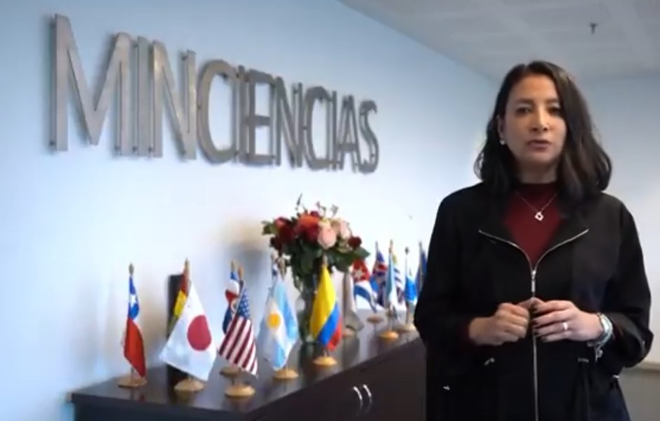

La ministra de Ciencia, Claudia Benavides Salazar, denunció hallazgos preliminares por más de $9.800 millones en recursos para la investigación, entre noviembre de 2024 y julio de 2026. Ya los pasó a Contraloría, Procuraduría y Fiscalía. Ahora nos toca a los ciudadanos exigir respuestas.
Hallazgos preliminares que el Ministerio trasladó a los entes de control. Son presuntos: les toca a las autoridades confirmar responsabilidades.
millones de pesos en hallazgos preliminares
almuerzos pagados sin listas que digan quién se los comió
personas en eventos contratados sin soportes de infraestructura ni capacidad técnica
meses revisados: de noviembre de 2024 a julio de 2026
servicios certificados como recibidos antes de que se prestaran, y fechas que no cuadran
contratos logísticos firmados en plena Ley de Garantías y precios sin justificación clara
Dónde va y qué falta.
Una sola carta, dirigida a todas las entidades involucradas, que se envía de una vez desde tu correo. Es tu derecho (artículo 23 de la Constitución y Ley 1755 de 2015).
Al tocar el botón se abre tu correo con la carta lista y las entidades como destinatarias. Solo dale Enviar. Guarda el correo enviado: es tu prueba de radicación.
Pásala a tu familia y a tus grupos. Cada persona puede enviar la suya.